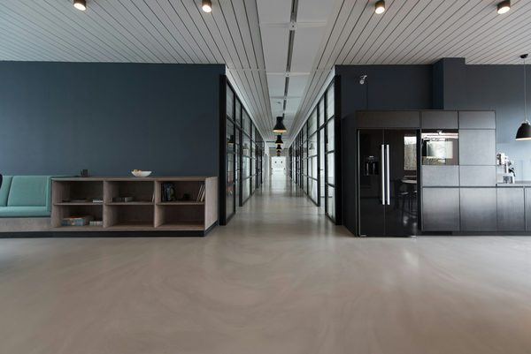

서울원(SeoulOne)은 뺄셈에서 시작한다. 타워도, 공원도, 의료센터도 더하기 전에, 이 마스터플랜은 우리가 도시와 떼어낼 수 없다고 여기는 것을 먼저 지운다. 지상의 자동차다. UNStudio는 현대산업개발과 함께 서울 동북부 40만5천㎡ 옛 산업·철도 부지를 고가 플랫폼 위에 올린 차 없는 동네로 재개발한다. 주차와 차량 진입은 모두 아래쪽 외곽 순환로로 밀어냈다. 그 위에는 걸어 다니는 '10분 도시'가 놓인다. 주거, 오피스, 호텔, 스포츠 시설, 어린이집, 시니어 주거, 의료센터가 모두 도보 거리 안에 있다. 프로젝트는 이미 착공했다. 던져야 할 질문은 조감도가 인상적인가가 아니라, 이것이 무엇을 시험하고 있는가다.
고가 데크 위의 '10분 도시'
핵심 아이디어는 말하기는 쉽고 짓기는 어렵다. 일상의 필요가 도보 10분 안에 있어야 한다. 파리, 멜버른, 상하이의 도시계획 논쟁을 관통해 온 '15분 도시'의 사촌뻘인 이 틀 자체는 새롭지 않다. 서울원을 주목하게 만드는 것은 그것을 가능케 하는 물리적 결정이다. 동네를 차 없는 플랫폼 위로 들어 올리고, 모든 차량을 지하 주차장과 외곽 순환로로 돌림으로써 지면이 사람에게 돌아온다. 바깥을 향한 상점 띠가 이 고가 마을을 주변의 평범한 거리와 다시 꿰매어, 데크가 도시 위에 떠 있는 폐쇄된 섬이 되지 않도록 한다. 보행자와 자동차를 분리한다는 오래된 도시의 꿈을, 현대의 도구로 다시 시도하는 셈이다.

'복합용도'가 아니라 '다세대 공존'
한국의 대형 개발은 대부분 '복합용도'를 판다. 주거 위에 상업, 그 위에 오피스를 쌓는 식이다. 서울원은 더 구체적인 것을 겨냥한다. 어린이집과 시니어 주거, 의료센터가 마케팅용으로 덧붙인 편의시설이 아니라 계획의 골격인 다세대 공존이다. UNStudio는 이 개념을 여섯 개 층위로 조직한 '거대한 생명의 순환(Grand Circle of Life)'으로 설명한다. 설계는 부지의 30% 이상을 녹지에 배분한다. 포켓 파크, 루프 가든, 워터 가든, 숲길이 상징적 잔디밭이 아니라 사계절 녹색 마을을 지향한다. 사회적 혼합이 실제로 실현될지는 분양가와 임대 방식에 달려 있고, 그것은 조감도가 결코 보여주지 않는다. 그러나 아주 어린 세대와 아주 나이 든 세대를 하나의 걷는 틀 안에 함께 설계하려는 야심, 그 부분이 지켜볼 만하다.
"차 없는 도시는 사실 자동차에 관한 이야기가 아니다. 지면을 그 위에 사는 사람들에게 돌려줬을 때 동네에 무슨 일이 일어나는가에 대한 베팅이다."
마스터플랜에 숨은 자재 이야기
자재 플랫폼의 눈으로 보면 서울원 브리프에서 가장 조용히 흥미로운 문장은, 폐기물을 줄이고 프로젝트의 탄소발자국을 낮추기 위해 한국 전통 도자기에서 영감을 얻은 마감을 포함한 지역 조달 자재를 택했다는 대목이다. 이것은 각주가 아니라 신호다. 글로벌 스튜디오와 한국의 대형 개발사가 대표 지구의 디자인 언어에 '지역 조달'과 '도자기 유산'을 넣을 때, 그것은 자재 브랜드에게 프리미엄이 어디로 옮겨가는지를 알려준다. 원산지, 낮은 내재탄소, 읽히는 문화적 서사 쪽이다. 차 없는 데크는 자재 프로그램 자체도 바꾼다. 가벼운 하중, 광범위한 옥상 녹화, 워터 가든은 재래식 저층부가 필요로 하지 않던 방수·배수·구조 시스템을 요구한다. 도시적 제스처와 사양서는 양 끝에서 본 같은 결정이다.
편집장 코멘트
ARCHINODE는 서울원을 하나의 프로젝트라기보다, 한국의 대형 개발이 어디로 향하는지 — 따라서 자재 수요가 어디에 집중될지 — 를 보여주는 예고편으로 읽는다. 세 가지 방향이 두드러진다. 첫째, 보행성이 슬로건이 아니라 시공 사양이 되고 있다. 고가 보행 데크, 외곽 순환로, 지하 주차는 구조와 배수 요구를 다시 짠다. 둘째, 이 규모에서의 '30% 녹지'는 옥상 정원, 물 관리, 경량 하지재를 조경의 부수물이 아니라 1차 자재 카테고리로 끌어올린다. 셋째, 지역 조달·저탄소·문화 기반 마감을 명시적으로 택한 것은 한국에 진입하는 해외 브랜드에게 플래그십 층이 이제 무엇에 보상하는지를 말해준다. 가격만이 아니라 신뢰할 만한 원산지·탄소 서사다. ARCHINODE에서 포지셔닝을 고민하는 브랜드에게 서울원은 프리미엄의 지도이며, 건물에서 가장 전략적인 결정이 종종 어떤 제품도 지정되기 전에 내려진다는 사실을 상기시킨다.